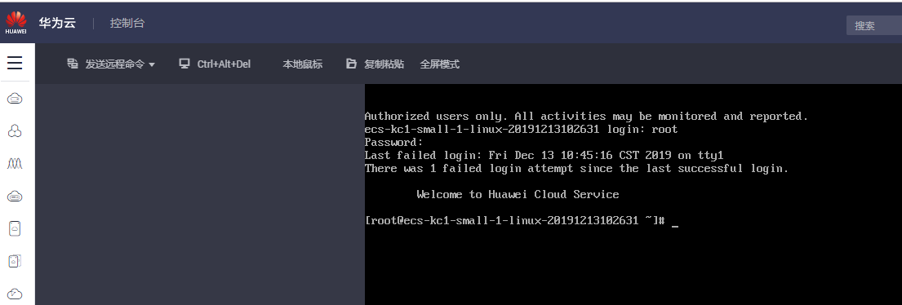
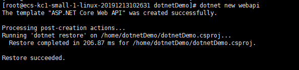
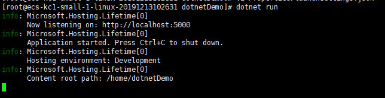
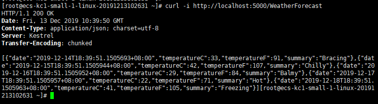

在EulerOS试用.NETCore-3.1
EulerOS其实出来有一段时间了，一直在关注，单是仅仅也只是停留在观望的阶段，目前还没有接入的打算；正好看到园子里的兄弟分享了华为云免费试用的活动后，难捺激动的心情，我马上去申请试用了一台服务器。先来看看官方的介绍（chuixu）
EulerOS是具备高安全性、高可扩展性、高性能、开放的企业级Linux操作系统平台，能够满足客户从传统IT基础设施到云计算服务的各种需求。EulerOS对ARM64架构提供全栈支持，打造完善的从芯片到应用的一体化生态系统。对于一个服务器操作系统来说，这个介绍可以说很到位了，安全、高性能、开放（据说年底开源？），基于Linux，再加上华为全家桶，其实看起来还是蛮诱人的了。
申请试用的地址是：https://activity.huaweicloud.com/free_test/index.html，我看到试用居然有奖？看了详细介绍后是要写试用体验，没关系，中奖那都是顺便的事，再说 Mate20 还是挺香的不是。
如果是打算写体验报告的同学，一定要选择 KCl，然后选择操作系统：EulerOS，这些准备工作完成，直接去支付后进入控制台等待主机创建完成就可以了
等待的过程有点无聊，大家可以去看看 EulerOS 的安装文档：https://obs.cn-north-1.myhuaweicloud.com/hweuleros/doc/cn/2.3/EulerOS%20V2.0SP3%20%E5%AE%89%E8%A3%85%E6%8C%87%E5%8D%97%EF%BC%88for%20ARM64%EF%BC%89.pdf
一旦主机创建完成，将会更新主机列表，会出现远程IP地址和远程登录按钮将变成可用状态。
管理控制台界面，通过点击“远程登录”按钮进行 Web 控制台登录，输入账号密码后将出现属性的黑色命令行控制台界面，有一个好习惯大家要坚持做，就是安装完成后，先看看系统相关信息

cat /proc/version
Linux version 4.19.36-vhulk1905.1.0.h276.eulerosv2r8.aarch64 (abuild@szxrtosci10000) (gcc version 7.3.0 (GCC)) #1 SMP Mon Apr 1 00:00:00 UTC 2019
[root@ecs-kc1-small-1-linux-20191213102631 ~]# hostnamectl
Static hostname: ecs-kc1-small-1-linux-20191213102631
Icon name: computer-vm
Chassis: vm
Machine ID: 678c78faca6d40c283240a5da1680b2c
Boot ID: 665694f713614100b7b86dd8550eb92a
Virtualization: kvm
Operating System: EulerOS 2.0 (SP8)
Kernel: Linux 4.19.36-vhulk1905.1.0.h276.eulerosv2r8.aarch64
Architecture: arm64好奇怪，全支持各种 CentOS 命令，具体原因是什么，咱也不知道咱也不敢问，挺好，不用学习新命令。既然如此，那就先来一个： yum update ，也很好，完全支持！
既然看起来一切和CentOS差不太多，那安装 .NETCore 应该也是可以安装CentOS来了，下面试试：
[root@ecs-kc1-small-1-linux-20191213102631 ~]# rpm -Uvh https://packages.microsoft.com/config/centos/7/packages-microsoft-prod.rpm
Retrieving https://packages.microsoft.com/config/centos/7/packages-microsoft-prod.rpm
Verifying... ################################# [100%]
Preparing... ################################# [100%]
Updating / installing...
1:packages-microsoft-prod-1.0-1 ################################# [100%]
[root@ecs-kc1-small-1-linux-20191213102631 ~]# yum install dotnet-sdk-3.1
packages-microsoft-com-prod 294 kB/s | 762 kB 00:02
Last metadata expiration check: 0:00:01 ago on Fri 13 Dec 2019 02:51:13 PM CST.
Error:
Problem: conflicting requests
- package dotnet-sdk-3.1-3.1.100-1.x86_64 does not have a compatible architecture
- nothing provides aspnetcore-runtime-3.1 needed by dotnet-sdk-3.1-3.1.100-1.x86_64
- nothing provides dotnet-runtime-3.1 needed by dotnet-sdk-3.1-3.1.100-1.x86_64
- nothing provides aspnetcore-targeting-pack-3.1 needed by dotnet-sdk-3.1-3.1.100-1.x86_64
- nothing provides dotnet-targeting-pack-3.1 needed by dotnet-sdk-3.1-3.1.100-1.x86_64
- nothing provides dotnet-apphost-pack-3.1 needed by dotnet-sdk-3.1-3.1.100-1.x86_64
- nothing provides netstandard-targeting-pack-2.1 >= 2.1.0 needed by dotnet-sdk-3.1-3.1.100-1.x86_64卧槽出错了，不过没关系，手动档我贼溜。
mkdir /opt/dotnet31
cd /opt/dotnet31
wget https://download.visualstudio.microsoft.com/download/pr/5a4c8f96-1c73-401c-a6de-8e100403188a/0ce6ab39747e2508366d498f9c0a0669/dotnet-sdk-3.1.100-linux-arm64.tar.gz
tar -zxvf dotnet-sdk-3.1.100-linux-arm64.tar.gz[root@ecs-kc1-small-1-linux-20191213102631 dotnet31]# /opt/dotnet31/dotnet --version
3.1.100这回真的是Euler。你看都到这一步了，干脆就弄个环境变量是吧，执行命令
vi /etc/profile
// 定位到文件末尾，加入下面的命令
PATH=$PATH:/opt/dotnet31
export PATH
保存，执行 source /etc/profile 使其生效
mkdir /home/dotnetDemo
cd /home/dotnetDemo
dotnet new webapi
由于默认启用了https，为了避免不要的麻烦，我们需要手动关闭https，编辑 vi Properties/launchSettings.json,将sslPort设置为0，applicationUrl中只保留 http 的地址即可。
{
...
"iisSettings": {
"iisExpress": {
"sslPort":0
}
},
"profiles": {
...
"dotnetDemo": {
...
"applicationUrl": "http://localhost:5000",
}
}
}

.NETCore3.1生成的webapi项目自带了天气预报的demo，再也不是2.0中那种无意义的valu1/value2了（比心）

整体来说，在终端上的操作体验，和CentOS几乎没有差别，我就是找不到包管理的官方文档，所以只好手动安装了，EulerOS作为鲲鹏的标配，感觉还是有所期待的，但是从OS的技术层面来说，EulerOS还需努力，广大的程序员们不用太担心，国产操作系统已在持续发力中，给点时间，我们应该可以做得更好。